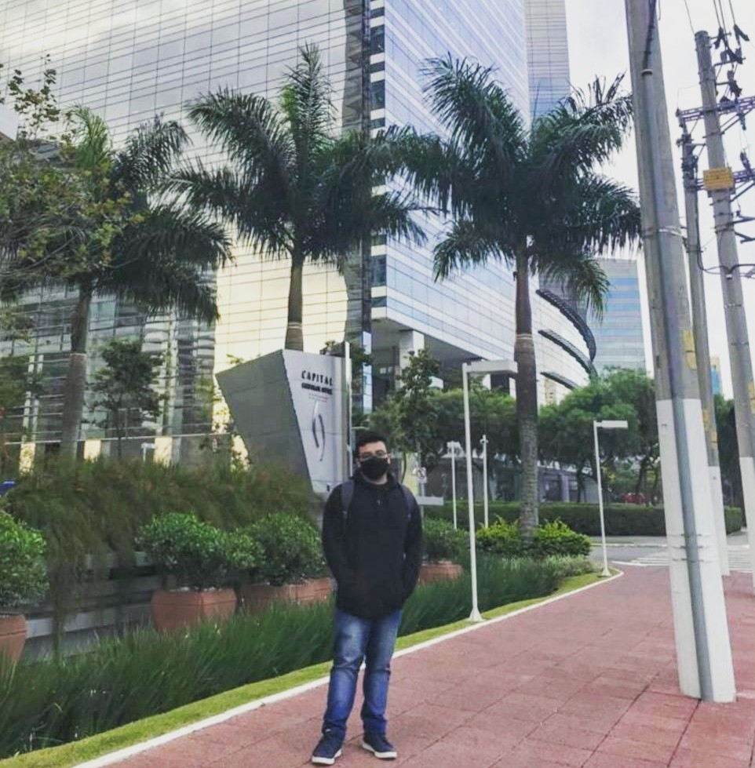
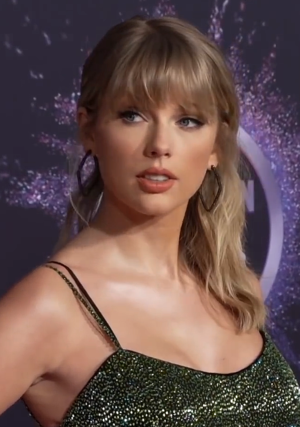
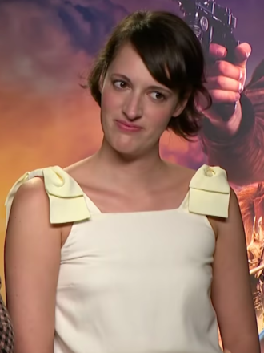
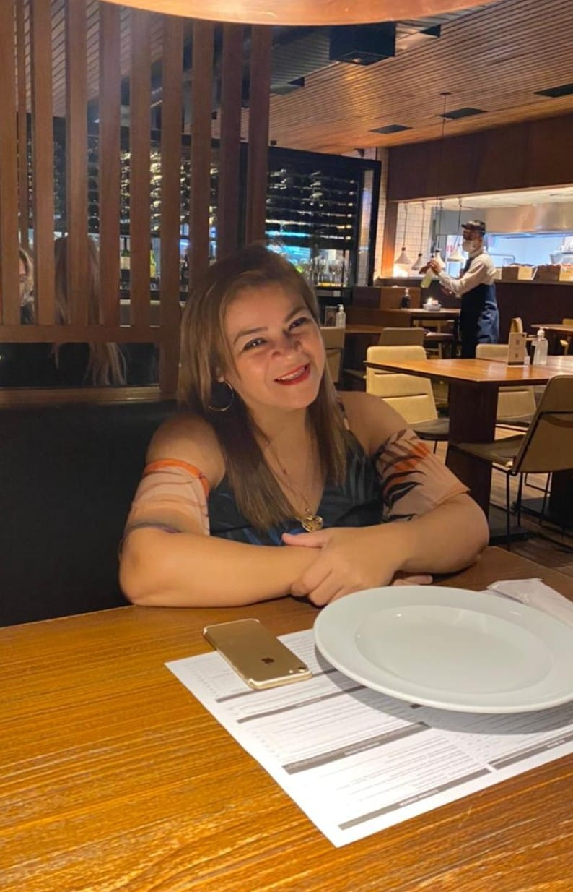

Essa página tem a função de introduzir um pouco os usuários a fatos interessantes sobre a vida, interesses e inspirações de Carlos (Drummond de Andrade) Eduardo
"Carlos Eduardo, 19 anos, é um jovem de 1,71m nascido em Manaus-AM que em 2021 migrou para SP em busca de oportunidade melhores onde em sua cidade não iria encontrar. Destemido, sem medo do novo e de mudar, este jovem busca a felicidae, estabilidade financeira e uma saúde mental de qualidade mesmo que isso seja impossivel na situação atual do páis. Apaixonado por games, a empresa Nintendo por mais que seja a mais mercenária de todas é a sua desenvolvedora favorita por causa de sua inovação e renovação perante a momentos de dificuldade e crise ao longo da história. Assim como a cantora e compositora Taylor Swift."

/s.glbimg.com/po/rc/media/2014/09/15/07_49_45_979_queijo.jpg)
| Nome | Bio | Link no Wikipedia |
|---|---|---|
|  | Taylor Alison Swift é uma cantora e compositora norte-americana. Suas composições narrativas geralmente se concentram em sua vida pessoal e receberam elogios críticos e cobertura da mídia. Minha inspira a ser uma pessoa adaptável, | Conheça Mais |
|  | Phoebe Mary Waller-Bridge é uma atriz, escritora e dramaturga britânica. Escreveu minha série favorita e demonstra sua versatilidade escrevendo séries de suspense, drama e ação. | Conheça Mais |
|  | Nara Ruth é uma mulher de 46 anos e minha progenitora, minha inspiração diária de como ser forte e aguentar o tranco. | Não Conheça Mais |